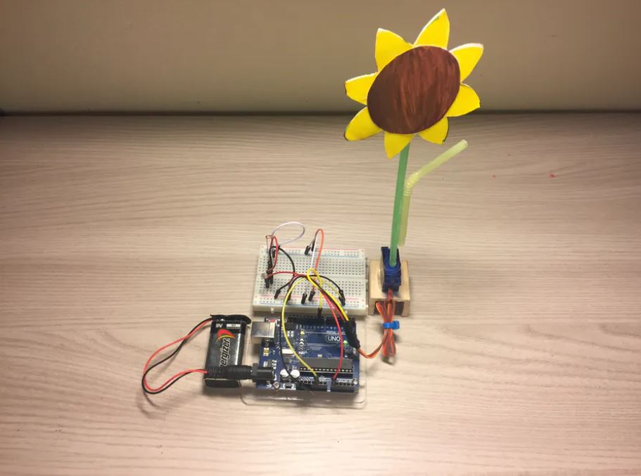
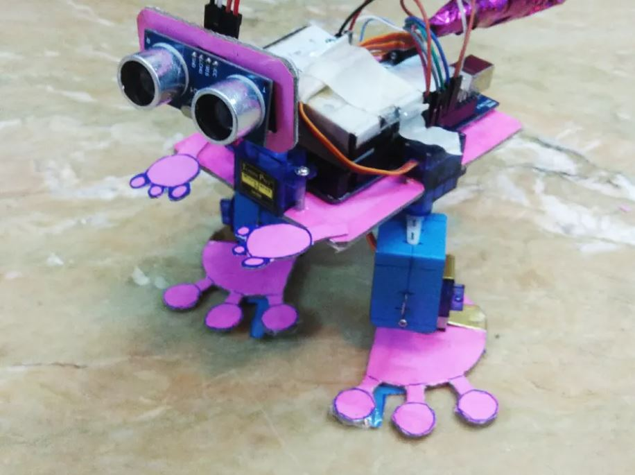
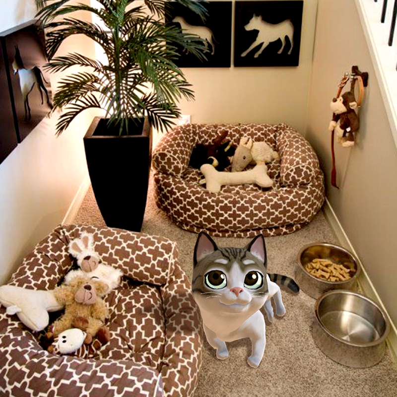
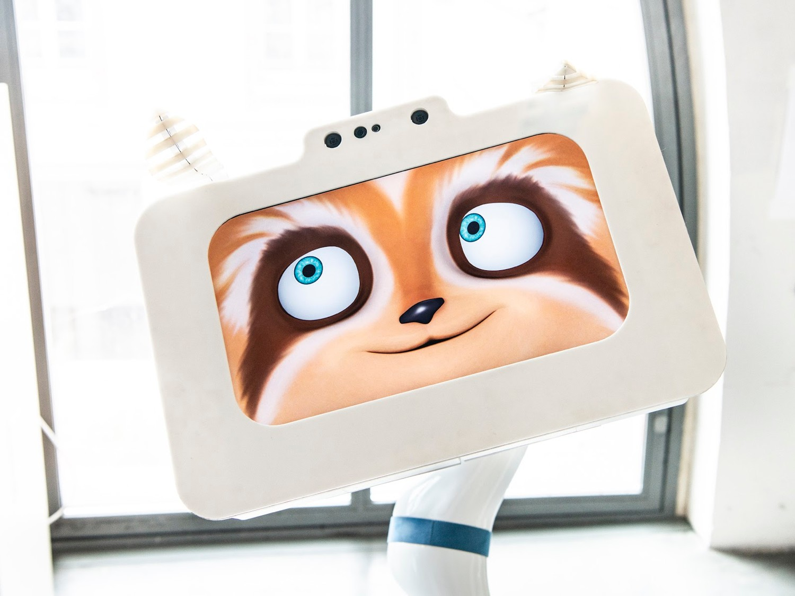

Dit project is gemaakt door Rick_Findus. Voor de Arduino Sunflower is er gebruik gemaakt van de Arduino UNO & Genuino UNO, 1 servomotor, 2 photoresistors en 10 Jumpers. De software dat hiervoor gebruikt is, is de Arduino IDE. De reden waarom ik dit project leuk vind, is omdat dit een soort toekomstbeeld kan zijn de natuur. Mechanische planten en bomen dat naar de licht keren en daarmee van CO2, O2 maken. Natuurlijk neem ik aan dit nog ver gezocht is en het nog jaren kan duren voordat dit echt iets wordt. Maar het is een ideetje. Vooral als een mechanische boom meer CO2 naar O2 kan maken. Verder ben ik altijd dol op planten en bomen geweest en plant ik altijd wat zaadjes in de lente. Bij dit project draait de 'kunstmatige' zonnebliem, zodra er meer licht op de sensor valt. Het draait net als een echte plant naar het licht toe. Dit is een erg simpele project, maar toch geinig. Het heeft me wel wat meer leuke ideetjes gegeven, zoals de idee dat ik hierboven heb genoemd. Hieronder heb ik een link naar dit project.  Link project
Dit project is gemaakt door iemand met de gebruikersnaam Renga. Voor dit project is er gebruik gemaakt van 5 SG90 Micro-servo motoren, een Arduino Mega 2560 & Genuino Mega 2560, 1 Sparkfun Ultrasonic sensor en 1 9 volt batterij. Dit is hobbyproject wat te vinden is op de Arduino website. Het is niet gemaakt door een bijvoorbeeld een studio. Wat ik erg leuk vindt aan dit project, is dat het erg simpel is. Het is gewoon een simpele project dat toch cool eruit ziet. Het is een project dat wij ook kunnen maken voor deze challenege. Dat maakt dit project een echte inspiratiebron naar mijn mening. Ook is het gwn een minirobotje dat gemaakt is van zo weinig materiaal. Dat vind ik toch knap, aangezien er vaak miljoenen uitgegeven worden voor andere robots. Natuurlijk zijn deze robotos beter ontwikkeld en kunnen zij misschien echt menselijk gedrag nadoen, maar voor dit als eenmansproject is dit toch erg fascinerend. Dit project is namelijk een simpele robot, dat beweegt als er voldoende afstand is tussen de robot en de afstandssensor. Hieronder heb ik een link naar het project.  Link project
Dit project is gemaakt door InnoVision, wat voorheen RockVR genoemd werd. Dit bedrijf is opgericht in China, in juni 2016 met verschillende programmeurs en artist uit o.a. OculusVR, Facebook, USC, Tsinghua University, etc. InnoVision houdt zich veel bezig met Artificial Intelligence, Augmented- en Virtual Reality projecten als de "Moon VR Player" en de "VR Game Capture". Het bedrijf heeft veel investeerders, waardoor het zich weet draaiende te houden. Het bedrijf kent vele partners als Oculus, Gear VR van Samsung, Daydream, VIve en noem maar op. Een groot bedrijf in China dus! Ik vind dit een leuk project omdat ik van huisdieren hou. Echter mag er geen huisdier in mijn ouders huis komen, waar ik woon. Dit is dus een soort ideale oplossing voor mensen zoals ik. Nu kan je een digitale huisdier houden, waarvan je ouders geen last heeft! De katje ziet er ook qua ontwerp en gedrag erg levend uit. Alhoewel ik mijn twijfels heb of dit een echte huisdier kan vervangen. Je kan met de AR katje niet echt spelen. Natuurlijk heb je geen rotzooi, stank en zorgen meer voor je huisdier met een digitale huisdier. OOk zal het katje je bankstel en ander meubilair kapot kunnen krabben. Het heeft zijn voor- en nadelen. Persoonlijk wil ik graag een huisdier kunnen aaien, maar geen extra lasten en zorgen klinkt ook aantrekkelijk. Een huisdier dat voor eeuwig met je blijft zonder zorgen, kosten en lasten of een echt levend katje dat kosten en problemen met zich meebrengt.  Link project
Dit project is gemaakt Spoon studio. Spoon is een bedrijf dat gespecialiseerd is in het maken van Artificial Creatures. De robots dat Spoon maakt willen ze niet 'humanoid' maken, omdat zei vinden dat humanoid robots meer moeten kunnen doen dan dat momenteel doen. Hun doel is eigenlijk om een natuurlijke interactie te maken dat je ook met bijvoorbeeld een huisdier zou kunnen. Een robot dat zich met 'simpele' bewegingen, erg realistisch kan zijn. Het robot dat met mensen in aanraking komt, moet volgens Spoon ons kunnen waarnemen, luisteren en begrijpen. Wat ik zo leuk vind aan dit project ligt vooral aan de bewegingen dat ik in het video heb gezien. De robot lijkt in mijn ogen net een hondje dat zijn baasje opmerkt. De robot gaat van een wat lagere positie naar hoger. Net als een hond dat ligt en opstaat als hij/zij zijn baas ziet. Het geeft naar mijn mening een erg menselijke gevoel. Het lijkt alsof de robot echt emoties heeft door het gedrag dat het vertoond. Het zijn de simpele karakteristieken dat iets levend kan laten lijken. Net zoals hier simpelweg dat het lijkt alsof Spoon je opmerkt. Natuurlijk heeft Spoon een display, waar het schattige gezichtsuitdrukkingen kan laten zien.  Link project 1 Link project 2
Mijn oude challenge was dat ik een theezetter had gemaakt. Ik had de opdracht namelijk verkeerd begrepen en dacht dus dat je een soort machine/robotachtig iets mocht maken. Na het herkijken van de Computer vision presentatie kwam ik erachter dat ik ook wat digitaals mocht maken. Hierdoor ben ik wat gaan schetsen en online kijken wat en hoe ik een artificial creature kan maken dat interactief kan zijn. Hier kwam ik plots op het idee om een 'droom' van toen ik een klein kind was te maken. Ik wou namelijk altijd wel een karakter hebben, wat net als in videospelletjes, leuk je begroet als je in de buurt komt. Dat doet deze creature dus! Hij loopt rond en als je dichtbij komt begroet hij je! Tijdens het maken van deze challenge kwam ik tegen een aantal problemen op. Het laten lopen is een ding. Maar een tweede animatie toevoegen als ik in de buurt komt, was toch wel pittig. Ik merkte dat ik echt teveel tijd hebt gestopt in het nalezen van documentatie en hoe een 'anim montage' werkt. Dit bleek een goede oplossing te zijn, maar het kon ook anders merkte ik. Na veel proberen heb ik een ander manier gevonden, namelijk een behavior tree. Dit kon ik blijkbaar ook toepassen voor het random lopen. Ik merkte dus dat er veel dingen anders kunnen. Door de tijd dat ik erin heb gestopt, merkte ik toch wel dat Unreal Engine wel goed is om te leren. In de eerste instantie had ik echt heel veel moeite met Unreal Engine. Maar na veel onderzoeken, lezen en doen merkte ik dat het wel te doen was.
Artifical creatures en Affective computing zijn naar mijn mening de toekomst. Affective computing wordt al overal gebruikt en kan alleen nog maar beter worden. Echter, betwijfel ik of emoties daadwerkelijk in zulke machines verwerkt kunnen worden en dit ook veilig kan. Emoties brengt natuurlijk leuke gevoelens, maar ook negatieve gevoelens. En iets dat nauwkeurige berekeningen kan maken en voorspellen zal met de emoties heel wat anders kunnen denken dat mensen. Echter, als dit veilig en nauwkeurig wordt uitgevoerd, moet dit wel goedkomen. Artificial creatures zullen ook vast en zeker een belangrijke rol gaan spelen in de toekomst. Natuurlijk zal dit voor de eerste instantie gaan om simpele taken of taken dat mensen nauwelijks kunnen uitvoeren, overnemen en uiteindelijk misschien alle taken. Ook kan het natuurlijk je beste vriend(in) of huisdier worden. Dit zie je vaak in film ook terugkomen. Over mijn uiteindelijk product ben ik erg tevreden mee. Ik heb toch de tijd dat ik vrij kan krijgen van stage, toch wat leuks kunnen maken. Op deze resultaat ben ik toch aardig trots op. Ik merkte dat het toch wel lastig was om HCI en stage te combineren. Het vragen van vrij was ook al een heel gedoe, aangezien ik wat heel wat deadlines en meetings heb binnenkort. Toch heb ik in een week tijd toch wat gaafs kunnen bedenken en maken. Een creature dat gewoon lekker aan het rondlopen is. Ik merkte dat ik Unreal Engine toch wel leuk vond om te maken. Ook om opdracht 4b opnieuw te maken van workshop 3, was eigenlijk heel erg leuk. Terwijl ik het de voor de vakantie echt totaal niks aan vond.. Mijn ervaring met Arduino heb ik in principe bij de vorige challenge verteld. Echter, was ik echt inspiratieloos en vond ik middenin de challenge dit echt niet meer leuk. Gelukkig heb ik mezelf goed opgepakt en gedaan wat ik kon doen. De cellular automate vond ik ook erg grappig om te maken, maar dit was erg pittig. Hier heb ik veel te veel tijd aan besteed. Vooral aan de tweede tinkering, wat in eerste instantie ook een cellular automate was, maar niet gelukt was. Ik merk dat vooral de coderen bij elke challenge een struikelblok is en dat ik daar erg wat tijd aan kwijtraak. Echter, zijn de technologiën dat we gebruiken tijdens de challenge erg nuttig en leerzaam. Ik merk dat ik per challenge erg veel leer over de technieken, maar ook qua mindset. Ik zie namelijk veel verschillende voorbeelden, waardoor je toch weer een andere kijk krijgt op de opdrachten. Het is namelijk niet alleen robots, zoals ik in de eerste instantie dacht.